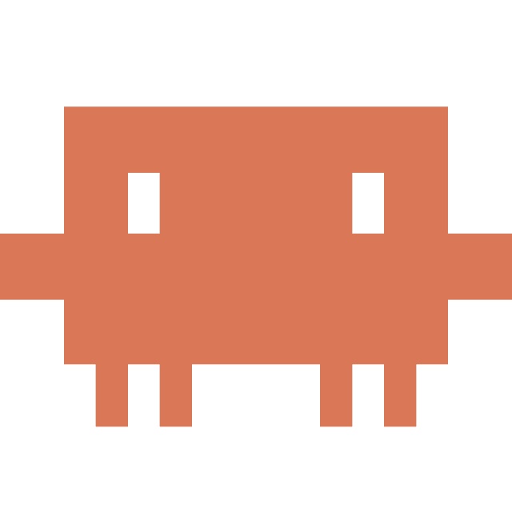

Claude Monitor
📌
✕
현재 세션
---%
주간 (모든 모델)
---%
주간 (Sonnet)
---%
⚙ 환경설정
▼
주간 (모든 모델) 표시
주간 (Sonnet) 표시
📊 메뉴바 표시
🐾 떨리는 아이콘
🔢 숫자 %
📊 세로 바
⭕ 원형 차트
🏢 조직
자동 선택
⚠ 경고 임계값
%
🚨 위험 임계값
%
세션 재설정 알람
⏰ 몇 분 전
20분
15분
10분
5분
재설정 시
투명도
94%
라이트
다크